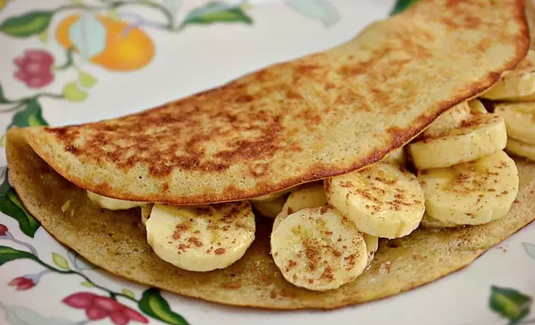
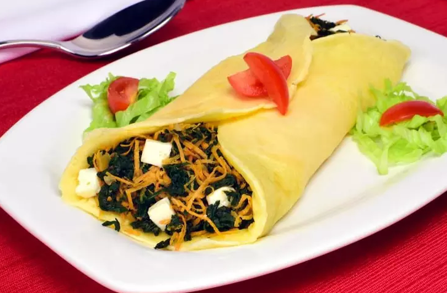

Crepioca de Banana
- 1 Ovo
- 2 Colheres (sopa) de tapioca
- 1 Banana amassada
- 1 Banana em rodelas
- Canela em pó a gosto
Recheio
Modo de preparo:Em uma tigela, misture o ovo, a tapioca, a banana e a canela. Aqueça uma frigideira antiaderente untada com óleo em fogo médio e despeje a mistura de tapioca. Cozinhe até firmar. Coloque a banana e a canela e dobre ao meio. Sirva!
Crepioca de Espinafre Fit
- 1 Ovo
- 3 Colheres (sopa) de goma de tapioca hidratada
- 1/2 Colher (sopa) de requeijão light
- 1 Colher (sobremesa) de queijo parmesão ralado
- 1/2 Xícara (chá) de espinafre escalado
- 1 Cenoura crua ralada
- Cubos de queijo branco
Recheio
Modo de preparo:Bata os ingredientes da massa até dar o ponto. Despeje em uma frigideira antiaderente. Espere assar e vire para dourar do outro lado. Retire e recheie com a mistura de espinafre, cenoura e queijo. Sirva!
Sorvete de Limão Light
- 2 xícaras (chá) de iogurte
- 1 xícara (chá) de suco de limão
- 2 colheres (sopa) de raspas de limão
- 1 xícara (chá) de leite em pó
- 1/2 xícara (chá) de leite desnatado
- 1 xícara (chá) de açúcar
Modo de preparo: Bata no liquidificador todos os ingredientes, adicionando um a um. Coloque em um recipiente e leve ao congelador por cinco horas ou até ficar consistentes. Retire e bata na batedeira rapidamente. Volte ao congelador por mais 1 hora. Se desejar, decore com folhas de hortelã e sirva!